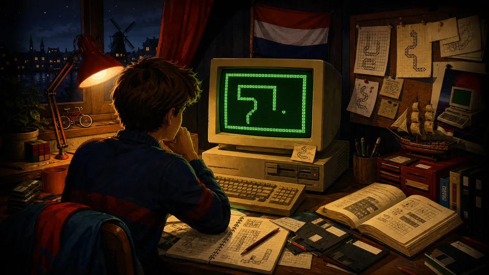
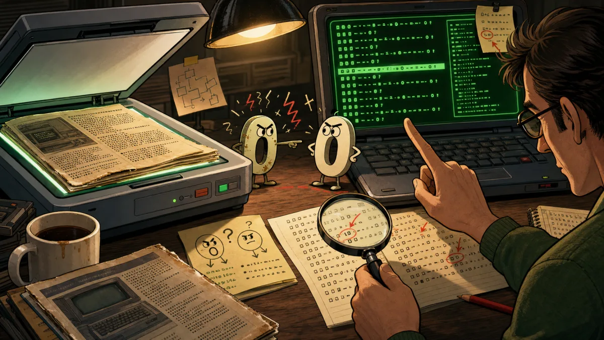
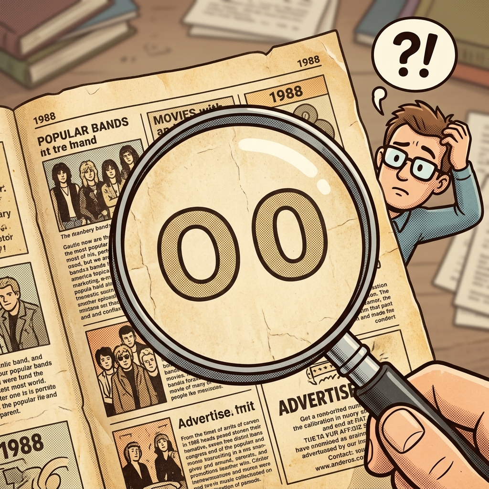

Хроніка Sneekie
Історія
Це історія Sneekie: змії, що народилася влітку 1988 року, була надрукована в національному компʼютерному журналі, спала ціле покоління на папері і прокинулася у 2026 році, щоб працювати в браузері.

Змія не була випадковістю. Її написали рядок за рядком, і вона ожила.
Літо 1988 року
У 1988 році Sneekie була написана на GW-BASIC для MS-DOS. Не було framework, engine чи готових ігрових обʼєктів: тільки текстовий екран 80×25, курсор BASIC і прямий доступ до відеопамʼяті.
Підпис HerbySoft став маленькою makerʼs mark на грі, яка була настільки близькою до машини, наскільки це дозволяв домашній BASIC.
Екран став світом
Головна ідея Sneekie проста і сильна: екран сам є станом гри. Стіни, серця, камені, стріли і тіло змії — це символи CP437, записані прямо у відеопамʼять через POKE і прочитані назад через PEEK.
Саме тому порт 2026 року міг лишитися таким вірним: у браузері зʼявився масив vram, але модель не змінилася. Картинка і дані — ті самі байти.
Народження змії
Гравець веде змію крізь 32 рівні, збирає ♥ серця і ♣ трефи, штовхає ◙ камені і тікає від рухомих ↑←→ стріл. Кожна здобич подовжує тіло, і простір стає дедалі небезпечнішим.
Напруга Sneekie живе саме там: жадібність дає очки, але довга змія швидко робить лабіринт тісною пасткою.

Надруковано для читачів
У жовтні 1988 року Sneekie вийшла в MS(X)DOS Computer Magazine № 25 як type-in program. Читачі отримали повний GW-BASIC listing і могли набрати гру вручну у власних машинах.
Для того часу це було справжнім релізом: не download, не app store, а сторінки коду, журнал на столі і уважні пальці на клавіатурі.
Довгий сон
Дискети старіли, компʼютери змінювалися, але listing лишився в журналі. Десятиліттями папір був найнадійнішою копією Sneekie: друкований код чекав, поки його знову прочитають.

2026: воскресіння у браузері
У 2026 році друкований listing був відновлений OCR-ом, вичитаний і перенесений у статичну браузерну версію. Порт лишив оригінальні line numbers у коментарях, зберіг назви змінних і відтворив пряме screen-memory мислення.
Навколо гри зʼявилися сторінки з manual, source listing, magazine scans, visualizer і live bot. Старий type-in став сайтом, але всередині він досі думає байтами, клітинками і POKE.

Вічна змія
Sneekie тепер живе у трьох часах: у 1988 році, де її написали; на друкованій сторінці, де вона спала; і у 2026 році, де вона знову рухається, їсть серця і карає нетерплячих.